Administración de servidores GNU/Linux
Clase 13: LVM y RAID
Módulo 2 — Administración de Servidores
Temas de la clase 13
Objetivos de la clase
Lo que ya vimos
El problema
Particiones fijas
Dos capas nuevas
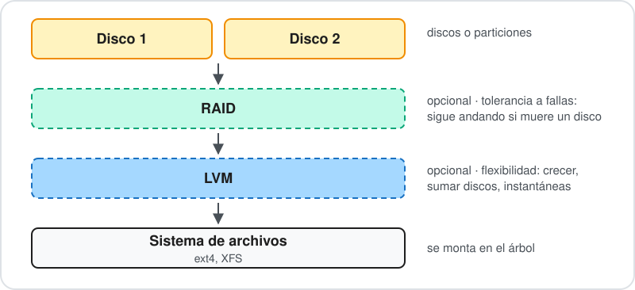
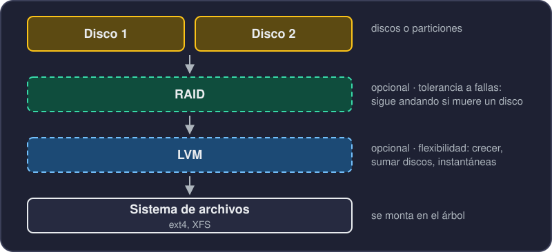
LVM
¿Qué es LVM?
Las tres capas
| Capa | Qué es | Se crea con |
|---|---|---|
| PV, volumen físico | Un disco o una partición preparada para LVM | pvcreate |
| VG, grupo de volúmenes | El espacio de uno o varios PV junto | vgcreate |
| LV, volumen lógico | Un tramo del VG que se formatea y se monta | lvcreate |
Paso 1: discos y particiones
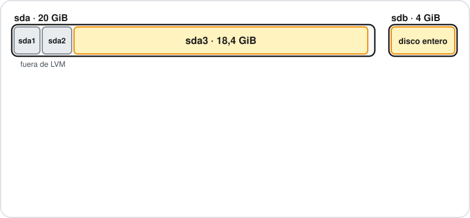
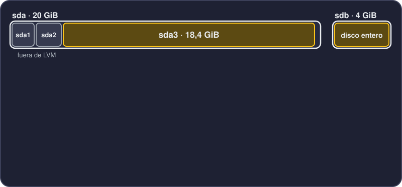
*Para explicar mejor el concepto de LVM se agrega en la imágen un disco de 4GiB que es como se hará el Lab 12.1.
Paso 2: volúmenes físicos
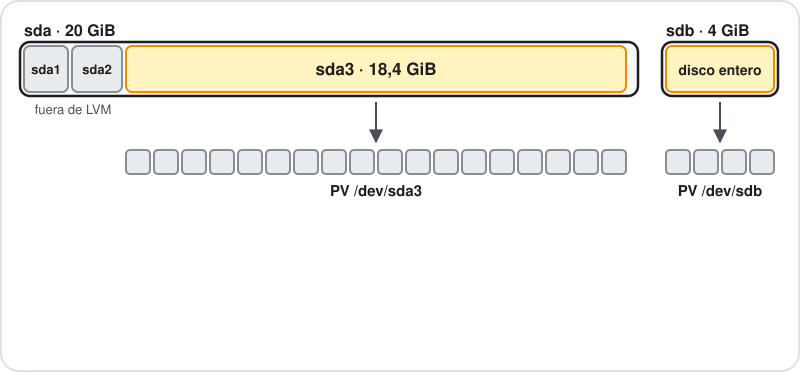
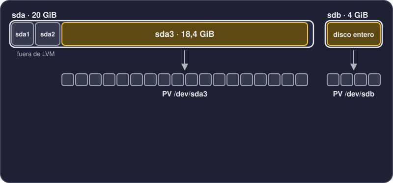
Paso 3: grupo de volúmenes
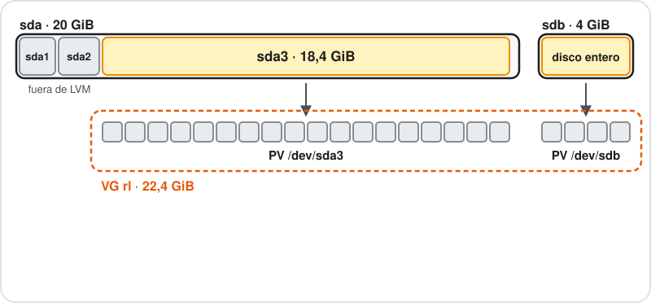
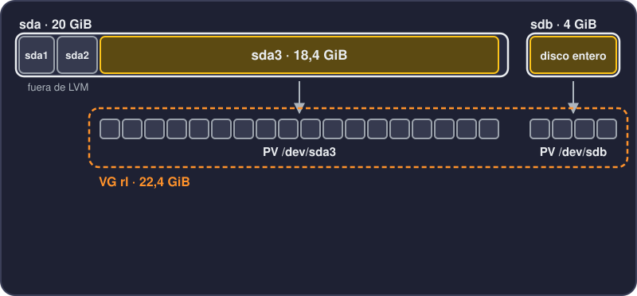
Paso 4: volúmenes lógicos
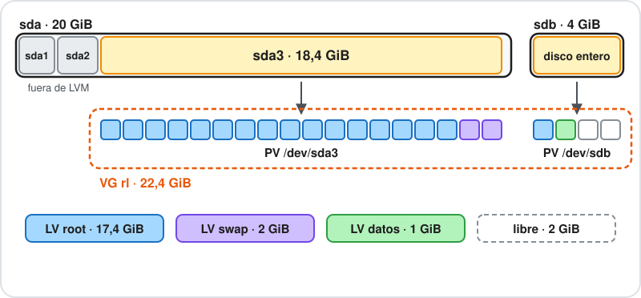
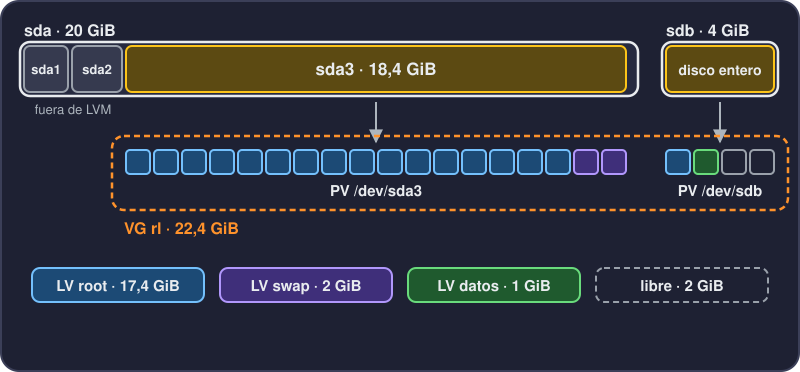
Paso 5: sistemas de archivos
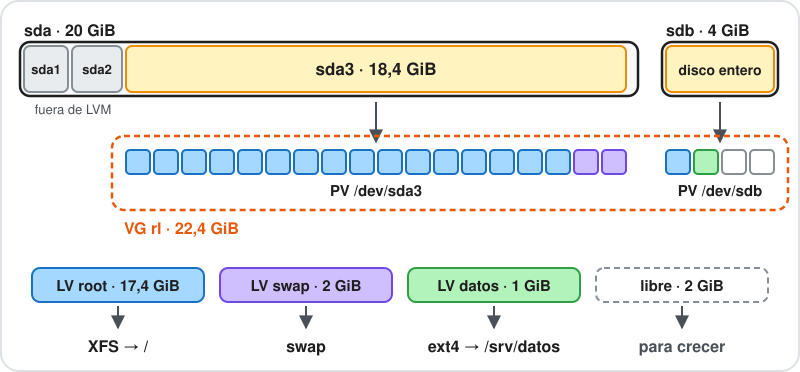
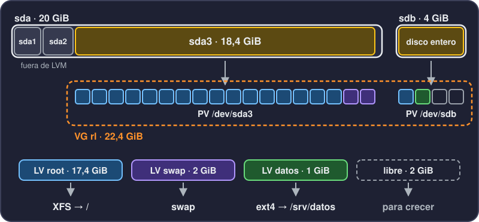
Cómo se llaman los volúmenes
| Ruta | Qué es |
|---|---|
/dev/dm-0, /dev/dm-1 |
El dispositivo que crea el kernel. El número puede cambiar. |
/dev/mapper/rl-root |
Nombre estable: VG y LV unidos por un guion. |
/dev/rl/root |
Otro nombre estable, un directorio por VG. |
/dev/mapper/rl-root / xfs defaults 0 0
/dev/mapper/rl-swap none swap defaults 0 0LVM en la VM Rocky
$ lsblk -o NAME,SIZE,TYPE,FSTYPE,MOUNTPOINTS
NAME SIZE TYPE FSTYPE MOUNTPOINTS
sda 20G disk
├─sda1 600M part vfat /boot/efi
├─sda2 1G part xfs /boot
└─sda3 18,4G part LVM2_member
├─rl-root 16,4G lvm xfs /
└─rl-swap 2G lvm swap [SWAP]
sr0 1024M rom pvs, vgs y lvs
$ sudo pvs
PV VG Fmt Attr PSize PFree
/dev/sda3 rl lvm2 a-- 18,41g 0
$ sudo vgs
VG #PV #LV #SN Attr VSize VFree
rl 1 2 0 wz--n- 18,41g 0
$ sudo lvs
LV VG Attr LSize Pool Origin Data% Meta% Move Log Cpy%Sync Convert
root rl -wi-ao---- 16,41g
swap rl -wi-ao---- 2,00gConsultas
Crear y ampliar
Crear un volumen
sudo pvcreate /dev/sdb
sudo vgcreate datos /dev/sdb
sudo lvcreate -n web -L 1G datos
sudo mkfs.xfs /dev/datos/web
sudo mount /dev/datos/web /srv/web| Opción | Tamaño |
|---|---|
-L 1G |
1 GiB exacto |
-l 100%FREE |
Todo lo libre del VG |
-l 50%FREE |
La mitad de lo libre |
Ampliar en caliente
sudo lvextend -r -L +1G rl/root| Sistema de archivos | Comando |
|---|---|
| ext4 | resize2fs /dev/rl/datos |
| XFS | xfs_growfs / |
Si el VG está lleno
Ampliar la raíz de Rocky
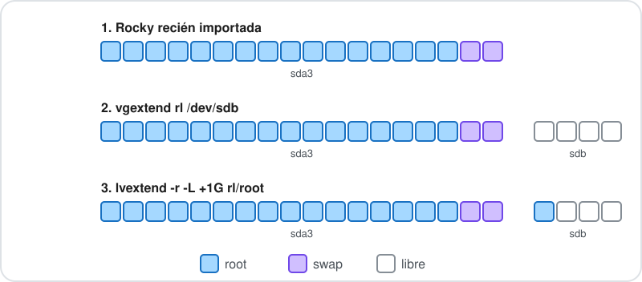
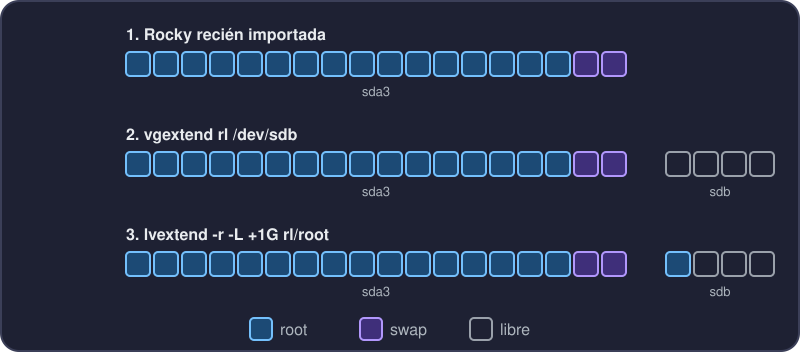
Un LV en dos discos
Achicar
Consultas
Instantáneas y LVM thin
Instantánea de LVM
Instantánea clásica
sudo lvcreate -s -n datos-antes -L 200M rl/datossudo umount /srv/datos
sudo lvconvert --merge rl/datos-antes
sudo mount /srv/datosLVM thin
Pool y volúmenes thin
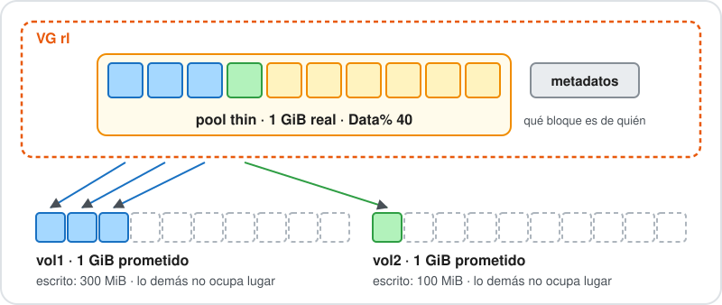
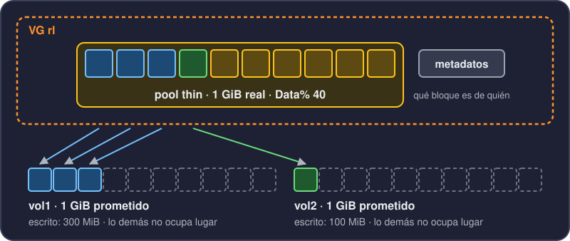
sudo lvcreate --type thin-pool -n pool -L 1G rl
sudo lvcreate --thin -n vol1 -V 1G rl/pool
sudo lvcreate --thin -n vol2 -V 1G rl/poolSobreasignación
LV VG Attr LSize Pool Origin Data% Meta%
pool pruebas twi-aotz-- 1,00g 35,62 14,36
vol1 pruebas Vwi-aotz-- 1,00g pool 35,62
vol2 pruebas Vwi-a-tz-- 1,00g pool 0,00Instantánea clásica o thin
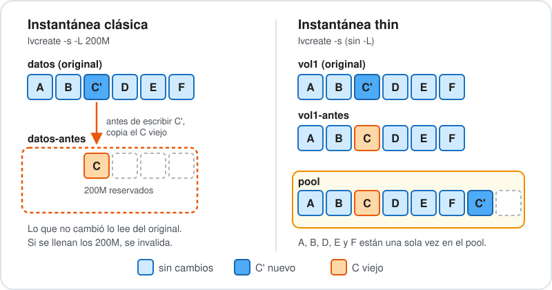
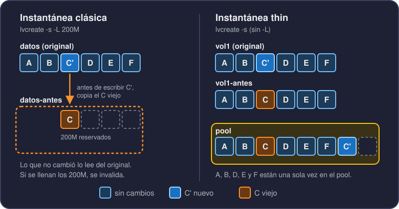
LVM thin en Proxmox
LV en el VG pve |
En Proxmox |
|---|---|
root |
Almacenamiento local, para ISO y respaldos |
swap |
Swap |
data |
Pool thin: almacenamiento local-lvm |
Consultas
RAID
¿Qué es RAID?
RAID 0: distribución
Mínimo 2 discos · Capacidad: la suma de todos · No tolera fallas
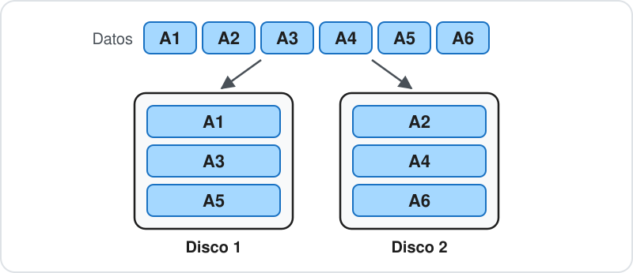
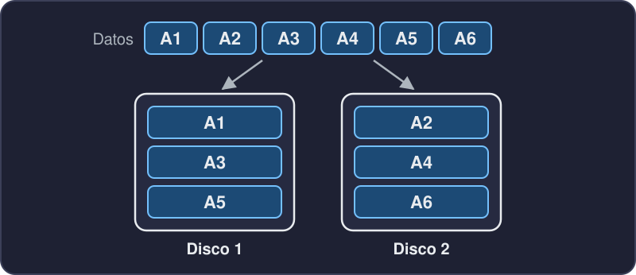
| Ventajas | Desventajas |
|---|---|
| Lee y escribe más rápido: usa los discos a la vez | Si muere un disco, se pierde todo |
| Aprovecha toda la capacidad | Cuantos más discos, más probable la falla |
RAID 1: espejo
Mínimo 2 discos · Capacidad: la de un disco · Tolera la falla de todos menos uno
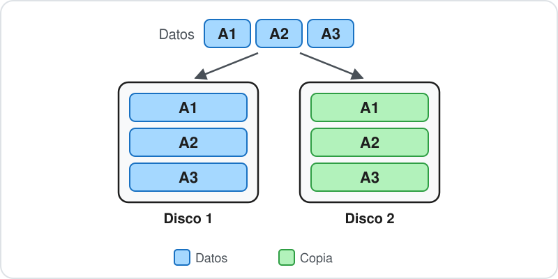
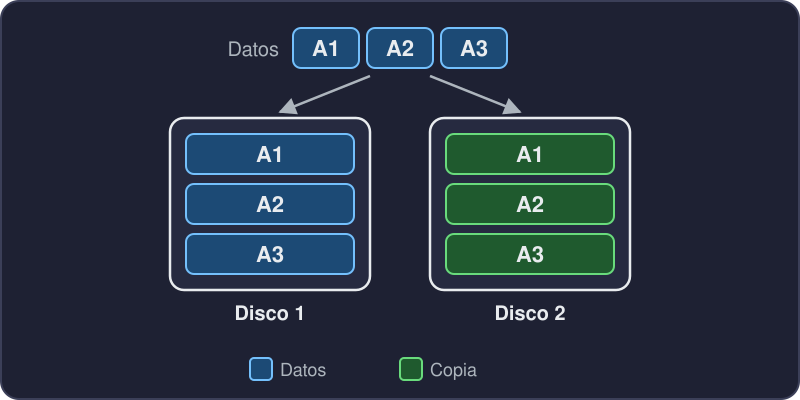
| Ventajas | Desventajas |
|---|---|
| Lee más rápido: puede leer de cualquier disco | Se pierde la mitad de la capacidad |
| Sigue andando con un solo disco | Escribe igual que un disco solo |
| Reconstruir es copiar el disco sano |
RAID 5: paridad distribuida
Mínimo 3 discos · Capacidad: todos menos uno · Tolera la falla de un disco
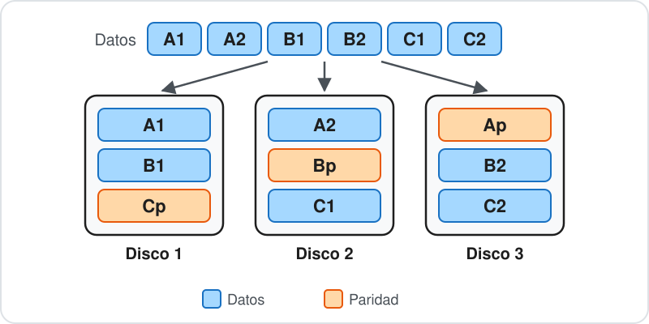
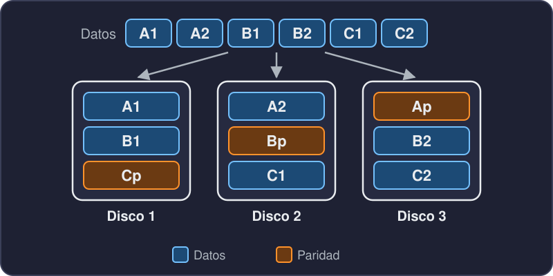
| Ventajas | Desventajas |
|---|---|
| Tolera una falla y pierde solo un disco de capacidad | Escribe más lento: recalcula la paridad |
| Lee rápido | Degradado, cada lectura del disco caído se calcula |
| Con discos grandes, la reconstrucción es larga y riesgosa |
RAID 6: doble paridad
Mínimo 4 discos · Capacidad: todos menos dos · Tolera la falla de dos discos
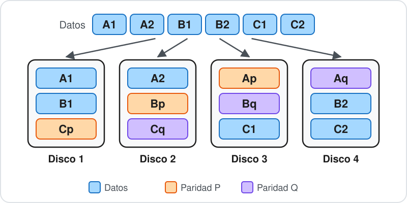
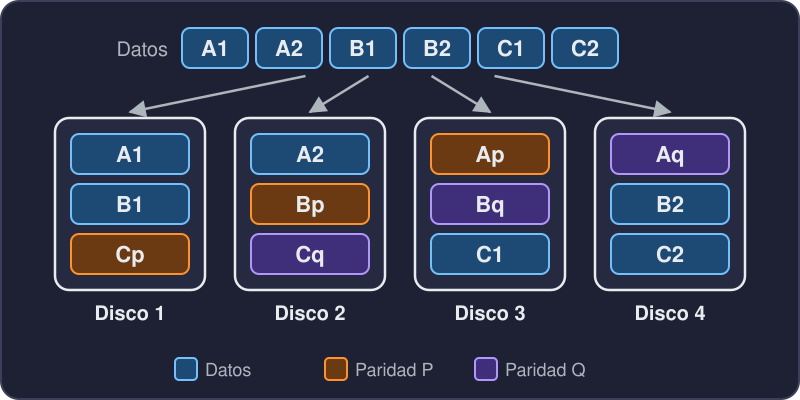
| Ventajas | Desventajas |
|---|---|
| Tolera dos fallas cualesquiera | Escribe más lento que RAID 5: calcula dos paridades |
| Aguanta otra falla durante la reconstrucción | Pierde dos discos de capacidad |
RAID 10: espejos repartidos
Mínimo 4 discos · Capacidad: la mitad · Tolera una falla seguro, una por espejo si hay suerte
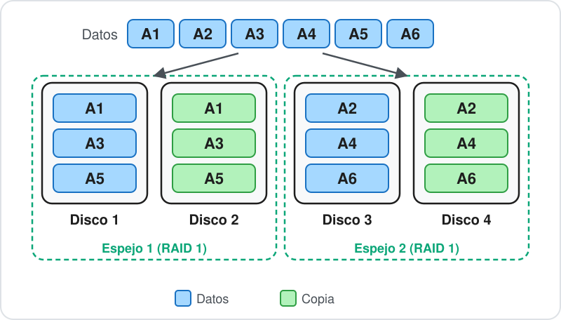
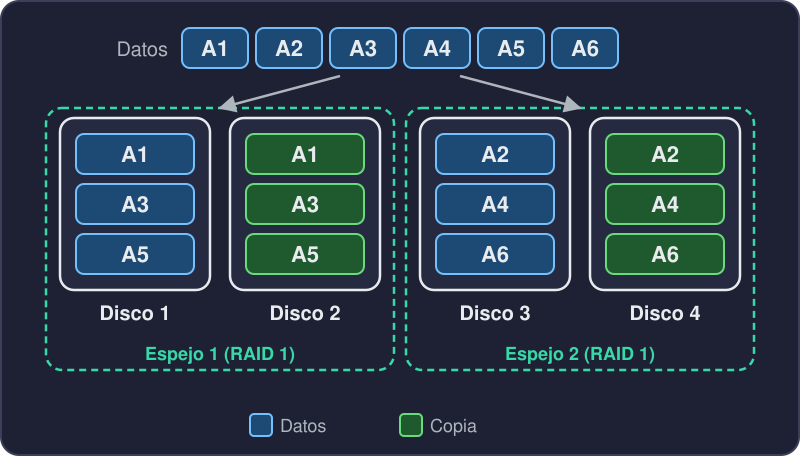
| Ventajas | Desventajas |
|---|---|
| Lee y escribe rápido: no hay paridad | Se pierde la mitad de la capacidad |
| Reconstruir es copiar el compañero de espejo | Si caen los dos discos de un espejo, se pierde todo |
Comparación
| Nivel | Mínimo | Capacidad | Fallas que tolera | Lectura | Escritura |
|---|---|---|---|---|---|
| RAID 0 (stripe) | 2 | 4 TB | Ninguna | ×4 | ×4 |
| RAID 1 (mirror) | 2 | 1 TB | 3 | ×4 | ×1 |
| RAID 5 (parity) | 3 | 3 TB | 1 | ×3 | ×1 |
| RAID 6 (double parity) | 4 | 2 TB | 2 | ×2 | ×1 |
| RAID 10 (mirror + stripe) | 4 | 2 TB | 1 seguro | ×4 | ×2 |
La reconstrucción
Disco de reserva (spare)
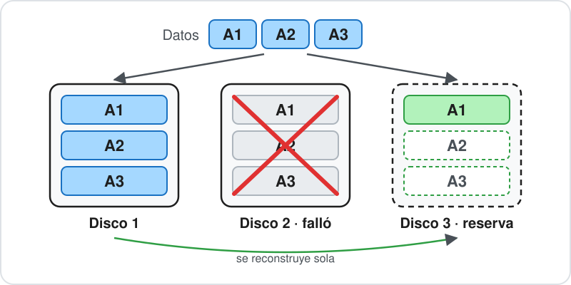
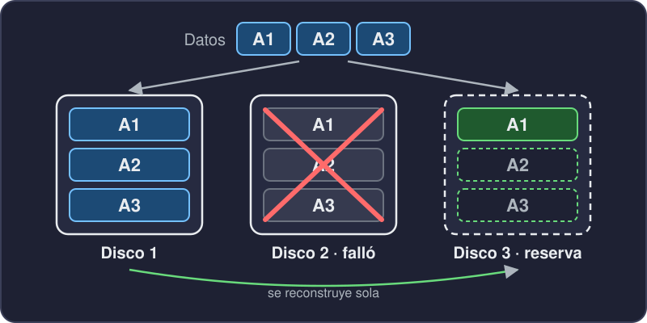
RAID no es un respaldo
Consultas
Dónde se arma el RAID
RAID por software en Linux
Controladoras por hardware
Btrfs y ZFS
Btrfs o ZFS
| Btrfs | ZFS | |
|---|---|---|
| Madurez | Espejo estable; RAID 5/6 todavía no | Muy maduro |
| Licencia | En el kernel | Fuera del kernel (CDDL) |
| Rocky | No está | Repositorio externo |
| Debian | Incluido | zfs-dkms, desde contrib |
| Dónde se ve | Fedora, openSUSE, Synology | Proxmox, TrueNAS |
RAID y LVM juntos
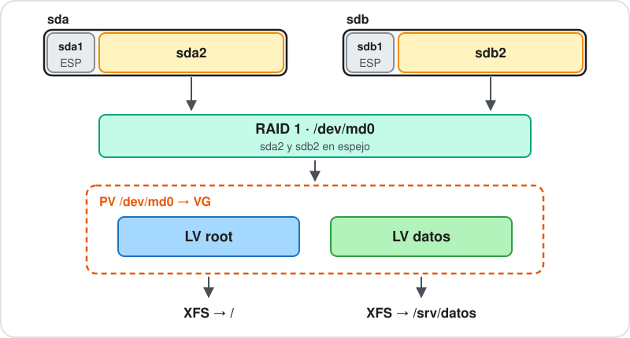
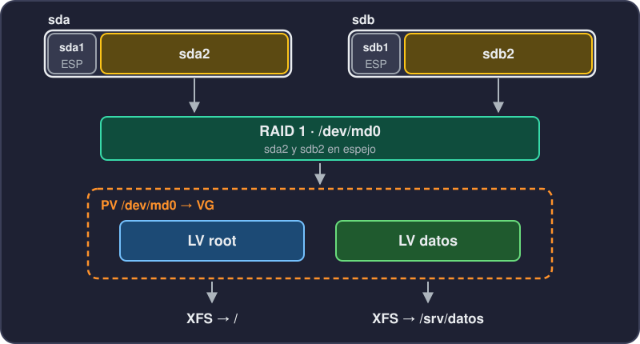
¿Cuál conviene?
Seguridad
Disponibilidad
Cifrado del disco: LUKS
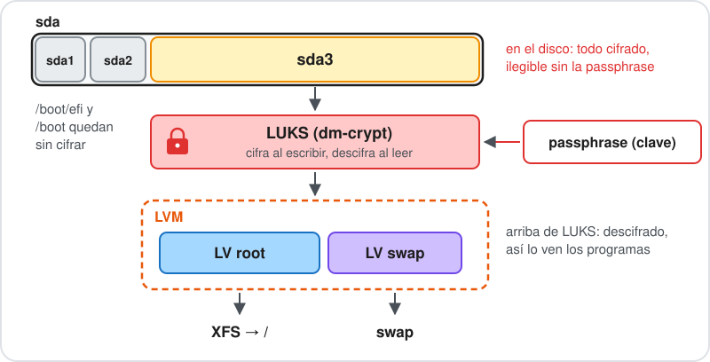
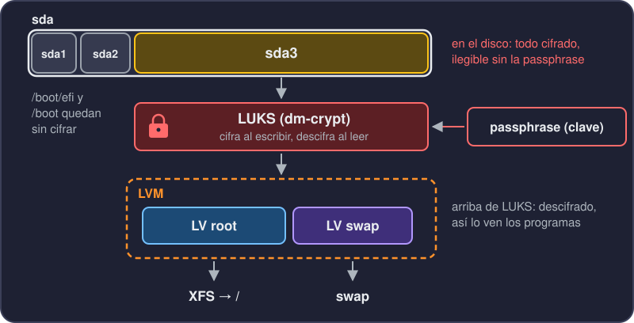